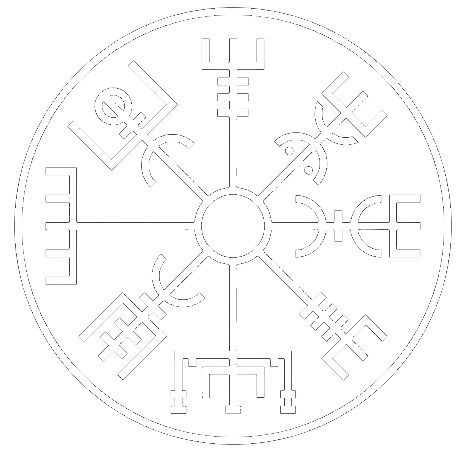

Simbologia é a ciência que estuda a origem, a interpretação e a arte de criar símbolos.
Todas as sociedades humanas que ja existiram ou existem possuem símbolos que expressam mitos, crenças, fatos, situações ou ideias, sendo umas
das formas de representação da realidade ou religião. Os símbolos existem desde o inicio da humanidade ajudando
formas de comunicação e interpretação.
Valknut
O Valknut é um símbolo nórdico da morte que teria a capacidade de acelerar a passagem
dos mortos para a vida eterna.
Trata-se de um dos símbolos mais importantes da mitologia nórdica.
Encontrado por arqueólogos em ruínas que remontam à época dos vikings -
séculos VIII a XI - é conhecido também como “nó dos enforcados” ou “nó dos
escolhidos”.
Formado por três triângulos entrelaçados, a palavra valknut em norueguês
significa “nó dos que caíram em batalha”, de modo que está relacionado com o culto
aos mortos e, logo, a Odin, aquele que transporta as almas para o submundo e às oferece
às Valquírias, ou Valkyries em inglês, que são espíritos femininos que ajudam Odin.
Assim, Odin, que é o deus dos mortos e o deus chefe para os nórdicos, muitas vezes aparece
junto com esse símbolo, que em decorrência do entrelaçamento dos triângulos pode ser
interpretado como uma espécie de vínculo entre o poder da vida sobre a morte ou uma
referência da transição da vida para a morte.
Importa referir que dentre as simbologias do triângulo, uma delas compreende às tríades
início, meio e fim ou corpo, alma e espírito.
Pelo fato de compor uma tríade, o valknut é por vezes confundido com o triskle. Este
é um símbolo celta que carrega o sentido de animismo, ou seja, a crença da presença
de alma em tudo o que exista.
Elmo do Terror
O Ægishjálmr, ou Helm of Awe (Elmo do Terror), é um dos símbolos mais misteriosos e poderosos da
mitologia nórdica. Nele observamos: oito "traços" que parecem tridentes irradiados de um ponto central,
indo
à ofensiva contra toda e qualquer força hostil que tente atacá-lo.
No Fáfnismál em um dos poemas da Edda, o Dragão devastador Fafnir atribui grande parte de sua aparente
invencibilidade ao uso do Ægishjálmr.
"Ægishjalm
bar ek of alda sonum,
meðan ek of menjum lák;
einn rammari
hugðumk öllum vera,
fannk-a ek svá marga mögu."
Tradução
Elmo do Terror
que usei diante dos homens,
em defesa do meu tesouro;
Entre todos, só eu era forte,
pois não encontrei nenhum poder igual ao meu.
Esta interpretação é confirmada por uma magia chamada “There is a Simple Helm of Awe Working”,
na coleção de contos folclóricos islandeses compilado por Jón Árnason, no século XIX.
O SIGILO
Faça um Elmo do Terror em chumbo, pressione a simbolologia entre as sobrancelhas e evoque:
"Ægishjálm er ég ber
milli brúna mér!"
Eu sustento o Elmo do Terror
entre minhas sobrancelhas!
Chifres de Odin
É um emblema associado a Odin. O simbolo consiste de três chifres de beber (Drink horn) interligados.
Na modernidade é uma forma de representação ao comprometimento com a fé Asatru moderna. O chifres
remetem à
mitologia e à tradição em vários aspectos,
representando o ritual de bebida realizado na cultura germânica pré-cristã (Sumbel) e representando a
busca
de Odin pelo hidromel da inspiração fabricado
por anões que assassinaram Kvasir o deus da sabedoria para usar seu sangue na fabricação. Os três
chifres
representam os três goles que foram permitidos a
Odin dar do hidromel da inspiração depois de ter passado três dias (Os Três Chifres podem também
representar
os três dias) seduzindo Gunlod dentro de uma
caverna onde estava escondido o Hidromel.
Bussola Nordica

A bússola viking é um símbolo presente na cultura Nórdica, tem o nome de Vegvísir e significa “ver o
caminho” ou “sinal de direção”. Não existe nenhum outro símbolo que equivalha a ele, ou seja, é único. É
também a “bússola” viking. Uma runa de proteção, derivada de Ægishjálmr – o elmo de Awe – o símbolo de
proteção mais popular da era viking.
A bússola viking é conhecida como um símbolo mágico e funcionava como uma bússola solar, para guiar as
pessoas em uma jornada de mais tempo numa viagem pelo mar.
Pode ser usada como símbolo de proteção, como uma bússola para a sua vida. Quando atravessarmos momentos
de
tempestade ou mau tempo, temos a bússola viking para nos guiar e conseguirmos sobreviver a um momento
ruim.
Existe uma frase sobre o significado da bússola viking que diz: “Se este símbolo (Vegvísir) for
carregado,
nunca se perderá em tempestades ou mau tempo, mesmo quando o caminho não for conhecido.” – Grimório Huld
Muito mais detalhes deste símbolo pode ser encontrado no livro Galdrabrók, porém ele está em inglês, mas
quem se interessar, fica aí uma dica.
Yggdrasil
Segundo algumas das teorias, a palavra "Yggdrasil" significa "forca", oque remete a lenda de um dos
principais deuses nórdicos, Odin, que, durante nove dias, ficou pendurado na árvore para poder descobrir
o
segredo das runas, que segundo a mitologia nórdica, são um presente do maior de seus deuses.
Ela é representada como um mitológico freixo gigante que suporta todo o universo habitado por deuses,
homens
e diversos outros seres fantásticos. Nas raízes em torno do tronco, encontram-se:
-Nilfheim, a Terra do Gelo;
-Iotumheim, a Terra dos Gigantes;
-Alfheim, a Terra dos Elfos;
-Muspelheim, a Terra do Fogo;
-Vanaheim, a Terra dos Deuses Vanir.
Sob eles, encontra-se Svartalhelm, a Terra dos Duendes e ainda mais abaixo, o Hell, submundo.
Ao redor de seu tronco principal, encontra-se Midgard - terra central onde vivem os homens e todas as
criaturas que conhecemos. Seus ramos se estendem até o Asgard, a terra dos deuses nórdicos.
Este Freixo representa a forma como os Vikings compreendiam o mundo e os cosmos. Hoje vemos o nosso
universo
de uma forma diferente, com várias esferas que representam planetas e estrelas, mas para os antigos
escandinavos não era exatamente dessa forma. Para eles, o universo possuía vários mundos e era
representado
de uma maneira arbórea, com todas as divisões e subdivisões dos reinos mitológicos em que acreditavam.
Segundo a lenda, Odin, o mais importante deus da mitologia nórdica, afim de obter o segredo das runas -
símbolos mágicos que podem ser utilizados em forma de escrita ou de oráculo - ofereceu um de seus olhos
e
durante nove dias e nove noites, ficou pendurado na gigantesca Yggdrasil.
Coincidentemente, assim como Cristo, foi transpassado por uma lança, açoitado pelo vento e nem mesmo
alguma
bebida lhe foi dada para que pudesse matar sua sede em meio a tanto tormento. Ele ofereceu-se em
sacrifício
para que pudesse ter a compreensão da vida e, ao final de sua agonia, no nono dia, Odin soltou um enorme
grito e, agarrando as runas, caiu da árvore.
Quando finalmente acordou de sua "morte", ele já possuía o conhecimento de muitos mistérios escondidos
aos
homens. Ele voltou ao mundo sabendo como curar doenças, livrar-se de inimigos e agarrar uma flecha em
pleno
voo.
A divindade maior da mitologia nórdica, tornou-se o símbolo do conhecimento e da sabedoria depois de seu
martírio na cruz Yggdrasil.